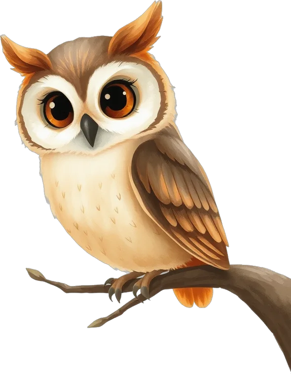
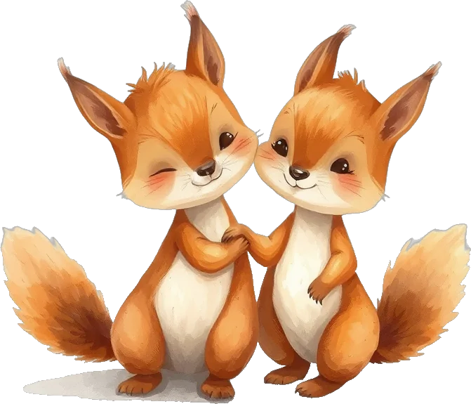
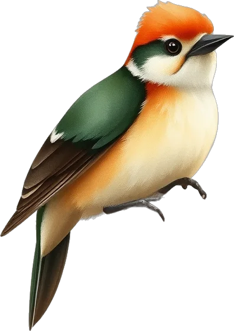
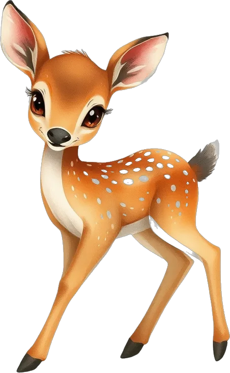
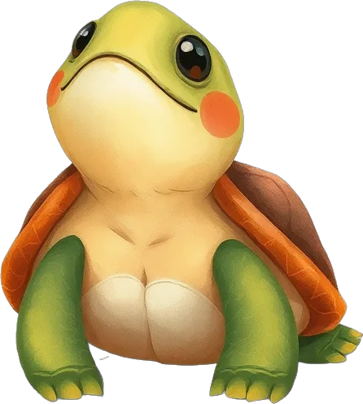

Ogni animale del bosco custodisce una storia. Scorri ed entra a conoscerli.

Alessio e gli alieni
Alessio Skool
Nonno Berto
Alessio a Pescara
Alessio al mareClicca un animale per la sua storia, o entra a vederle tutte.